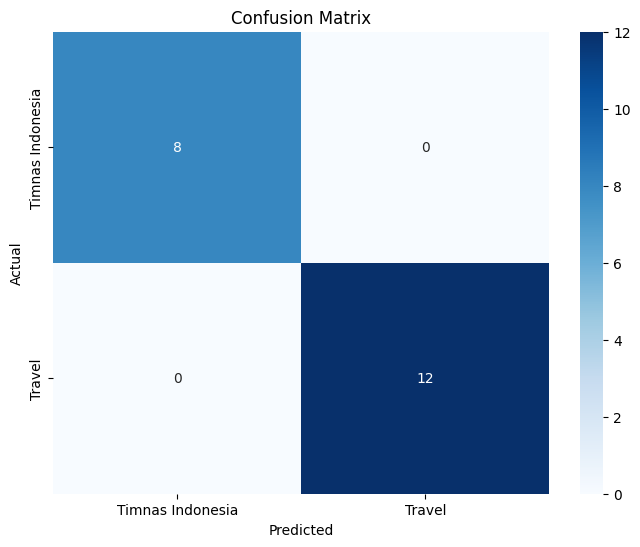

TUGAS 2 WITH REGRESI LOGISTIK#
Prio Budi Laksono
210411100177
Preprocessing hasil crawling data dari kompas.com
import requests
from bs4 import BeautifulSoup
import pandas as pd
import time
import random
# Daftar user agents yang akan dirotasi
USER_AGENTS = [
'Mozilla/5.0 (Windows NT 10.0; Win64; x64) AppleWebKit/537.36 (KHTML, like Gecko) Chrome/58.0.3029.110 Safari/537.3',
'Mozilla/5.0 (Macintosh; Intel Mac OS X 10_15_7) AppleWebKit/537.36 (KHTML, like Gecko) Chrome/91.0.4472.124 Safari/537.36',
'Mozilla/5.0 (X11; Ubuntu; Linux x86_64; rv:89.0) Gecko/20100101 Firefox/89.0',
]
# Fungsi untuk mengambil dan mem-parsing HTML dari URL
def get_soup(url):
headers = {
'User-Agent': random.choice(USER_AGENTS)
}
try:
response = requests.get(url, headers=headers)
if response.status_code == 200:
return BeautifulSoup(response.text, 'html.parser')
else:
print(f"Error {response.status_code} saat mengambil {url}")
return None
except Exception as e:
print(f"Error: {e}")
return None
def get_article_details(detail_url, category_name):
detail_soup = get_soup(detail_url)
if detail_soup:
# Ambil konten dari div dengan class 'read__content'
content_div = detail_soup.find('div', class_='read__content')
content = ' '.join([p.text for p in content_div.find_all('p')]) if content_div else 'Tidak ada isi berita'
# Coba ambil tanggal dari div dengan class 'videoKG-date' terlebih dahulu
date_tag = detail_soup.find('div', class_='videoKG-date')
if not date_tag:
# Jika tidak ditemukan, ambil dari div dengan class 'read__time'
date_tag = detail_soup.find('div', class_='read__time')
date = date_tag.text.strip().split('-')[-1].strip() if date_tag else 'Tidak ada tanggal'
# Ambil judul artikel
title_tag = detail_soup.find('h1')
title = title_tag.text.strip() if title_tag else 'Tidak ada judul'
return {
'judul': title,
'isi_berita': content,
'tanggal': date,
'kategori': category_name,
}
return None
# Fungsi untuk mendapatkan artikel dari suatu kategori
def get_articles(category_url, category_name, max_articles):
articles = []
page = 1
while len(articles) < max_articles:
url = f'{category_url}?page={page}'
print(f"Mengambil: {url}")
soup = get_soup(url)
if soup is None:
break
article_list = soup.find_all('h3', class_='article__title')
if not article_list:
print(f"Tidak ada artikel ditemukan di halaman {page}.")
break
for article in article_list:
if len(articles) >= max_articles:
break
title_tag = article.find('a')
detail_url = title_tag['href'] if title_tag else None
if detail_url:
article_details = get_article_details(detail_url, category_name)
if article_details:
articles.append(article_details)
sleep_time = random.uniform(3, 6)
# print(f"Menunggu selama {sleep_time:.2f} detik sebelum mengambil halaman berikutnya...")
time.sleep(sleep_time)
page += 1
return articles
# URL Kategori Kompas
categories = {
'Travel': 'https://www.kompas.com/tag/travel',
'Timnas Indonesia': 'https://www.kompas.com/tag/timnas-indonesia',
}
max_articles=50
# Mengumpulkan semua data
all_articles = []
for category_name, category_url in categories.items():
print(f"Menambang kategori {category_name}...")
articles = get_articles(category_url, category_name, max_articles)
all_articles.extend(articles)
# Simpan ke dalam DataFrame
df = pd.DataFrame(all_articles)
# Simpan ke dalam file CSV tanpa kolom 'url'
df.to_csv('kompas_articles.csv', index=False)
# Tampilkan 10 data pertama dalam bentuk tabel
print(df.head(10))
print("Proses penambangan data selesai, data tersimpan dalam 'kompas_articles.csv' dan 10 data pertama ditampilkan.")
Menambang kategori Travel...
Mengambil: https://www.kompas.com/tag/travel?page=1
Mengambil: https://www.kompas.com/tag/travel?page=2
Mengambil: https://www.kompas.com/tag/travel?page=3
---------------------------------------------------------------------------
KeyboardInterrupt Traceback (most recent call last)
<ipython-input-1-ee0f854e03c3> in <cell line: 99>()
99 for category_name, category_url in categories.items():
100 print(f"Menambang kategori {category_name}...")
--> 101 articles = get_articles(category_url, category_name, max_articles)
102 all_articles.extend(articles)
103
<ipython-input-1-ee0f854e03c3> in get_articles(category_url, category_name, max_articles)
76 detail_url = title_tag['href'] if title_tag else None
77 if detail_url:
---> 78 article_details = get_article_details(detail_url, category_name)
79 if article_details:
80 articles.append(article_details)
<ipython-input-1-ee0f854e03c3> in get_article_details(detail_url, category_name)
29
30 def get_article_details(detail_url, category_name):
---> 31 detail_soup = get_soup(detail_url)
32 if detail_soup:
33 # Ambil konten dari div dengan class 'read__content'
<ipython-input-1-ee0f854e03c3> in get_soup(url)
18 }
19 try:
---> 20 response = requests.get(url, headers=headers)
21 if response.status_code == 200:
22 return BeautifulSoup(response.text, 'html.parser')
/usr/local/lib/python3.10/dist-packages/requests/api.py in get(url, params, **kwargs)
71 """
72
---> 73 return request("get", url, params=params, **kwargs)
74
75
/usr/local/lib/python3.10/dist-packages/requests/api.py in request(method, url, **kwargs)
57 # cases, and look like a memory leak in others.
58 with sessions.Session() as session:
---> 59 return session.request(method=method, url=url, **kwargs)
60
61
/usr/local/lib/python3.10/dist-packages/requests/sessions.py in request(self, method, url, params, data, headers, cookies, files, auth, timeout, allow_redirects, proxies, hooks, stream, verify, cert, json)
587 }
588 send_kwargs.update(settings)
--> 589 resp = self.send(prep, **send_kwargs)
590
591 return resp
/usr/local/lib/python3.10/dist-packages/requests/sessions.py in send(self, request, **kwargs)
722 # Redirect resolving generator.
723 gen = self.resolve_redirects(r, request, **kwargs)
--> 724 history = [resp for resp in gen]
725 else:
726 history = []
/usr/local/lib/python3.10/dist-packages/requests/sessions.py in <listcomp>(.0)
722 # Redirect resolving generator.
723 gen = self.resolve_redirects(r, request, **kwargs)
--> 724 history = [resp for resp in gen]
725 else:
726 history = []
/usr/local/lib/python3.10/dist-packages/requests/sessions.py in resolve_redirects(self, resp, req, stream, timeout, verify, cert, proxies, yield_requests, **adapter_kwargs)
263 yield req
264 else:
--> 265 resp = self.send(
266 req,
267 stream=stream,
/usr/local/lib/python3.10/dist-packages/requests/sessions.py in send(self, request, **kwargs)
701
702 # Send the request
--> 703 r = adapter.send(request, **kwargs)
704
705 # Total elapsed time of the request (approximately)
/usr/local/lib/python3.10/dist-packages/requests/adapters.py in send(self, request, stream, timeout, verify, cert, proxies)
665
666 try:
--> 667 resp = conn.urlopen(
668 method=request.method,
669 url=url,
/usr/local/lib/python3.10/dist-packages/urllib3/connectionpool.py in urlopen(self, method, url, body, headers, retries, redirect, assert_same_host, timeout, pool_timeout, release_conn, chunked, body_pos, preload_content, decode_content, **response_kw)
787
788 # Make the request on the HTTPConnection object
--> 789 response = self._make_request(
790 conn,
791 method,
/usr/local/lib/python3.10/dist-packages/urllib3/connectionpool.py in _make_request(self, conn, method, url, body, headers, retries, timeout, chunked, response_conn, preload_content, decode_content, enforce_content_length)
534 # Receive the response from the server
535 try:
--> 536 response = conn.getresponse()
537 except (BaseSSLError, OSError) as e:
538 self._raise_timeout(err=e, url=url, timeout_value=read_timeout)
/usr/local/lib/python3.10/dist-packages/urllib3/connection.py in getresponse(self)
505
506 # Get the response from http.client.HTTPConnection
--> 507 httplib_response = super().getresponse()
508
509 try:
/usr/lib/python3.10/http/client.py in getresponse(self)
1373 try:
1374 try:
-> 1375 response.begin()
1376 except ConnectionError:
1377 self.close()
/usr/lib/python3.10/http/client.py in begin(self)
316 # read until we get a non-100 response
317 while True:
--> 318 version, status, reason = self._read_status()
319 if status != CONTINUE:
320 break
/usr/lib/python3.10/http/client.py in _read_status(self)
277
278 def _read_status(self):
--> 279 line = str(self.fp.readline(_MAXLINE + 1), "iso-8859-1")
280 if len(line) > _MAXLINE:
281 raise LineTooLong("status line")
/usr/lib/python3.10/socket.py in readinto(self, b)
703 while True:
704 try:
--> 705 return self._sock.recv_into(b)
706 except timeout:
707 self._timeout_occurred = True
/usr/lib/python3.10/ssl.py in recv_into(self, buffer, nbytes, flags)
1301 "non-zero flags not allowed in calls to recv_into() on %s" %
1302 self.__class__)
-> 1303 return self.read(nbytes, buffer)
1304 else:
1305 return super().recv_into(buffer, nbytes, flags)
/usr/lib/python3.10/ssl.py in read(self, len, buffer)
1157 try:
1158 if buffer is not None:
-> 1159 return self._sslobj.read(len, buffer)
1160 else:
1161 return self._sslobj.read(len)
KeyboardInterrupt:
df=pd.read_csv("kompas_articles.csv")
df.head(1000)
| judul | isi_berita | tanggal | kategori | |
|---|---|---|---|---|
| 0 | Cerita Pengunjung GATF 2024 Dapat Tiket Pesawa... | JAKARTA, KOMPAS.com - Isti, pengunjung Garuda ... | 01/12/2024, 07:07 WIB | Travel |
| 1 | Promo Tiket Pesawat di GATF 2024 Bank Mandiri,... | JAKARTA, KOMPAS.com - Garuda Indonesia bekerja... | 30/11/2024, 17:07 WIB | Travel |
| 2 | Ada Shuttle Gratis di Garuda Indonesia Travel ... | JAKARTA, KOMPAS.com - Garuda Indonesia Travel ... | 30/11/2024, 16:03 WIB | Travel |
| 3 | Tiket Terusan Garuda Indonesia Travel Festival... | JAKARTA, KOMPAS.com - Tiket terusan Garuda Ind... | 30/11/2024, 15:43 WIB | Travel |
| 4 | 3 Tips Dapat Tiket Pesawat Murah di Garuda Ind... | JAKARTA, KOMPAS.com - Garuda Indonesia menawar... | 30/11/2024, 14:11 WIB | Travel |
| ... | ... | ... | ... | ... |
| 95 | Timnas Indonesia Malu-malu Mau Juara AFF | Enam kali runner-up... dan belum mau juara. Ad... | 01/12/2024, 10:07 WIB | Timnas Indonesia |
| 96 | Sinergi dan Regenerasi, Menanti Bintang Baru G... | KOMPAS.com - Timnas Indonesia mengandalkan pem... | 01/12/2024, 07:30 WIB | Timnas Indonesia |
| 97 | Timnas Indonesia Kemungkinan Tanpa Justin Hubn... | KOMPAS.com – Skuad timnas Indonesia melakoni p... | 30/11/2024, 22:16 WIB | Timnas Indonesia |
| 98 | Piala AFF 2024: Keinginan Pelatih Port FC Liha... | KOMPAS.com - Pelatih Port FC (Thailand) Rangsa... | 30/11/2024, 19:45 WIB | Timnas Indonesia |
| 99 | [HOAKS] Pemain Jepang Kaoru Mitoma Menangis Sa... | Berdasarkan verifikasi Kompas.com sejauh ini, ... | 30/11/2024, 17:45 WIB | Timnas Indonesia |
100 rows × 4 columns
Preprocessing#
Preprocessing adalah langkah penting dalam mempersiapkan data mentah agar dapat diolah oleh model machine learning. Proses ini mencakup penanganan data yang hilang, normalisasi, konversi data kategori ke bentuk numerik, serta pembersihan teks. Tujuan dari preprocessing adalah membuat data menjadi lebih mudah dipahami dan diproses oleh model, sehingga hasil prediksi bisa lebih akurat. Berikut ini beberapa langkah umum dalam preprocessing teks.
Cleansing#
Data cleansing adalah proses pembersihan teks dari elemen-elemen yang tidak mendukung klasifikasi sentimen, seperti URL, tag HTML, emoji, simbol, angka, dan tanda baca (~!@#$%^&*{}<>:|). Elemen-elemen ini dihilangkan untuk mengurangi noise dalam data, sehingga tidak mengganggu analisis sentimen. Penghapusan komponen yang tidak relevan ini kemudian digantikan dengan spasi, menjaga struktur kalimat tetap utuh. Dengan data yang lebih bersih dan fokus pada kata-kata penting, model prediksi sentimen dapat bekerja dengan lebih akurat.
import re
import pandas as pd
import nltk
import string
def remove_url(text):
# Fungsi untuk menghapus URL dari teks.
if isinstance(text, str): # Memastikan text adalah string
url = re.compile(r'https?://\S+|www\.\S+')
return url.sub(r'', text)
return text # Kembali jika bukan string
def remove_html(text):
# Fungsi untuk menghapus tag HTML dari teks.
if isinstance(text, str): # Memastikan text adalah string
html = re.compile(r'<.*?>')
return html.sub(r'', text)
return text # Kembali jika bukan string
def remove_emoji(text):
# Fungsi untuk menghapus emoji dari teks.
if isinstance(text, str): # Memastikan text adalah string
emoji_pattern = re.compile("["
u"\U0001F600-\U0001F64F" # emotikon wajah
u"\U0001F300-\U0001F5FF" # simbol & gambar
u"\U0001F680-\U0001F6FF" # transportasi & simbol
u"\U0001F1E0-\U0001F1FF" # bendera negara
"]+", flags=re.UNICODE)
return emoji_pattern.sub(r'', text)
return text # Kembali jika bukan string
def remove_numbers(text):
# Fungsi untuk menghapus angka dari teks.
if isinstance(text, str): # Memastikan text adalah string
return re.sub(r'\d+', '', text)
return text # Kembali jika bukan string
def remove_symbols(text):
# Fungsi untuk menghapus simbol dan karakter khusus dari teks.
if isinstance(text, str): # Memastikan text adalah string
return re.sub(r'[^a-zA-Z0-9\s]', '', text)
return text # Kembali jika bukan string
# Asumsikan df adalah DataFrame yang berisi data CNN (judul, berita, tanggal, kategori)
# Contoh: df = pd.read_csv('berita-cnn.csv')
# Terapkan fungsi cleansing untuk kolom 'berita'
df['berita_clean'] = df['isi_berita'].apply(remove_url)
df['berita_clean'] = df['berita_clean'].apply(remove_html)
df['berita_clean'] = df['berita_clean'].apply(remove_emoji)
df['berita_clean'] = df['berita_clean'].apply(remove_symbols)
df['berita_clean'] = df['berita_clean'].apply(remove_numbers)
# Tampilkan beberapa baris dari hasil yang sudah dibersihkan
df.head(5)
| judul | isi_berita | tanggal | kategori | berita_clean | |
|---|---|---|---|---|---|
| 0 | Cerita Pengunjung GATF 2024 Dapat Tiket Pesawa... | JAKARTA, KOMPAS.com - Isti, pengunjung Garuda ... | 01/12/2024, 07:07 WIB | Travel | JAKARTA KOMPAScom Isti pengunjung Garuda Indo... |
| 1 | Promo Tiket Pesawat di GATF 2024 Bank Mandiri,... | JAKARTA, KOMPAS.com - Garuda Indonesia bekerja... | 30/11/2024, 17:07 WIB | Travel | JAKARTA KOMPAScom Garuda Indonesia bekerja sa... |
| 2 | Ada Shuttle Gratis di Garuda Indonesia Travel ... | JAKARTA, KOMPAS.com - Garuda Indonesia Travel ... | 30/11/2024, 16:03 WIB | Travel | JAKARTA KOMPAScom Garuda Indonesia Travel Fes... |
| 3 | Tiket Terusan Garuda Indonesia Travel Festival... | JAKARTA, KOMPAS.com - Tiket terusan Garuda Ind... | 30/11/2024, 15:43 WIB | Travel | JAKARTA KOMPAScom Tiket terusan Garuda Indone... |
| 4 | 3 Tips Dapat Tiket Pesawat Murah di Garuda Ind... | JAKARTA, KOMPAS.com - Garuda Indonesia menawar... | 30/11/2024, 14:11 WIB | Travel | JAKARTA KOMPAScom Garuda Indonesia menawarkan... |
CASE FOLDING#
Case folding adalah langkah dalam preprocessing teks di mana semua huruf kapital diubah menjadi huruf kecil, atau lowercase. Tujuan utama dari case folding adalah untuk menghilangkan redundansi yang muncul karena perbedaan kapitalisasi, sehingga kata seperti “Ekonomi” dan “ekonomi” dianggap sama dalam analisis teks. Tanpa case folding, komputer akan menganggap keduanya sebagai entitas yang berbeda, yang bisa menyebabkan duplikasi atau kesalahan interpretasi data. Dengan menyeragamkan kapitalisasi, analisis teks menjadi lebih konsisten dan akurat.
def case_folding(text):
if isinstance(text, str):
lowercase_text = text.lower()
return lowercase_text
else :
return text
df ['case_folding'] = df['berita_clean'].apply(case_folding)
df.head(5)
| judul | isi_berita | tanggal | kategori | berita_clean | case_folding | |
|---|---|---|---|---|---|---|
| 0 | Cerita Pengunjung GATF 2024 Dapat Tiket Pesawa... | JAKARTA, KOMPAS.com - Isti, pengunjung Garuda ... | 01/12/2024, 07:07 WIB | Travel | JAKARTA KOMPAScom Isti pengunjung Garuda Indo... | jakarta kompascom isti pengunjung garuda indo... |
| 1 | Promo Tiket Pesawat di GATF 2024 Bank Mandiri,... | JAKARTA, KOMPAS.com - Garuda Indonesia bekerja... | 30/11/2024, 17:07 WIB | Travel | JAKARTA KOMPAScom Garuda Indonesia bekerja sa... | jakarta kompascom garuda indonesia bekerja sa... |
| 2 | Ada Shuttle Gratis di Garuda Indonesia Travel ... | JAKARTA, KOMPAS.com - Garuda Indonesia Travel ... | 30/11/2024, 16:03 WIB | Travel | JAKARTA KOMPAScom Garuda Indonesia Travel Fes... | jakarta kompascom garuda indonesia travel fes... |
| 3 | Tiket Terusan Garuda Indonesia Travel Festival... | JAKARTA, KOMPAS.com - Tiket terusan Garuda Ind... | 30/11/2024, 15:43 WIB | Travel | JAKARTA KOMPAScom Tiket terusan Garuda Indone... | jakarta kompascom tiket terusan garuda indone... |
| 4 | 3 Tips Dapat Tiket Pesawat Murah di Garuda Ind... | JAKARTA, KOMPAS.com - Garuda Indonesia menawar... | 30/11/2024, 14:11 WIB | Travel | JAKARTA KOMPAScom Garuda Indonesia menawarkan... | jakarta kompascom garuda indonesia menawarkan... |
TOKENIZATION#
Tokenization adalah proses di mana setiap kata dalam dokumen dipisahkan menjadi unit-unit kecil yang disebut token. Proses ini memecah teks berdasarkan spasi atau tanda baca lainnya, sehingga setiap kata yang terpisah dianggap sebagai token individual. Misalnya, kalimat “Upaya agar ekonomi stabil” akan dipecah menjadi token-token [“Upaya”, “agar”, “ekonomi”, “stabil”]. Tokenization membantu model memahami struktur kalimat dengan lebih baik dan mempermudah pemrosesan lebih lanjut.
def tokenize(text):
# Memeriksa apakah input adalah string
if isinstance(text, str):
tokens = text.split()
return tokens
else:
return [] # Mengembalikan list kosong untuk input non-string
df['tokenize'] = df['case_folding'].apply(tokenize)
df.head(5)
| judul | isi_berita | tanggal | kategori | berita_clean | case_folding | tokenize | |
|---|---|---|---|---|---|---|---|
| 0 | Cerita Pengunjung GATF 2024 Dapat Tiket Pesawa... | JAKARTA, KOMPAS.com - Isti, pengunjung Garuda ... | 01/12/2024, 07:07 WIB | Travel | JAKARTA KOMPAScom Isti pengunjung Garuda Indo... | jakarta kompascom isti pengunjung garuda indo... | [jakarta, kompascom, isti, pengunjung, garuda,... |
| 1 | Promo Tiket Pesawat di GATF 2024 Bank Mandiri,... | JAKARTA, KOMPAS.com - Garuda Indonesia bekerja... | 30/11/2024, 17:07 WIB | Travel | JAKARTA KOMPAScom Garuda Indonesia bekerja sa... | jakarta kompascom garuda indonesia bekerja sa... | [jakarta, kompascom, garuda, indonesia, bekerj... |
| 2 | Ada Shuttle Gratis di Garuda Indonesia Travel ... | JAKARTA, KOMPAS.com - Garuda Indonesia Travel ... | 30/11/2024, 16:03 WIB | Travel | JAKARTA KOMPAScom Garuda Indonesia Travel Fes... | jakarta kompascom garuda indonesia travel fes... | [jakarta, kompascom, garuda, indonesia, travel... |
| 3 | Tiket Terusan Garuda Indonesia Travel Festival... | JAKARTA, KOMPAS.com - Tiket terusan Garuda Ind... | 30/11/2024, 15:43 WIB | Travel | JAKARTA KOMPAScom Tiket terusan Garuda Indone... | jakarta kompascom tiket terusan garuda indone... | [jakarta, kompascom, tiket, terusan, garuda, i... |
| 4 | 3 Tips Dapat Tiket Pesawat Murah di Garuda Ind... | JAKARTA, KOMPAS.com - Garuda Indonesia menawar... | 30/11/2024, 14:11 WIB | Travel | JAKARTA KOMPAScom Garuda Indonesia menawarkan... | jakarta kompascom garuda indonesia menawarkan... | [jakarta, kompascom, garuda, indonesia, menawa... |
STOPWORD REMOVAL#
Stopword removal adalah proses menghapus kata-kata umum yang tidak memiliki makna signifikan dalam analisis teks, seperti “dan,” “di,” “yang,” atau “itu.” Kata-kata ini sering muncul dalam teks namun tidak berkontribusi banyak terhadap pemahaman konteks atau makna utama. Dengan menghilangkan stopwords, teks menjadi lebih ringkas dan fokus hanya pada kata-kata penting yang memiliki nilai informatif lebih tinggi, sehingga meningkatkan efisiensi analisis, terutama dalam klasifikasi atau pemodelan teks.
from nltk.corpus import stopwords
nltk.download('stopwords')
stop_words = stopwords.words('indonesian')
[nltk_data] Downloading package stopwords to
[nltk_data] C:\Users\pblak\AppData\Roaming\nltk_data...
[nltk_data] Package stopwords is already up-to-date!
def remove_stopwords(text):
return [word for word in text if word not in stop_words]
df['stopword_removal'] = df['tokenize'].apply(lambda x: ' '.join(remove_stopwords(x)))
df.to_csv("preprocessing-kompas.csv", encoding='utf8', index=False)
df.head(100)
| judul | isi_berita | tanggal | kategori | berita_clean | case_folding | tokenize | stopword_removal | |
|---|---|---|---|---|---|---|---|---|
| 0 | Cerita Pengunjung GATF 2024 Dapat Tiket Pesawa... | JAKARTA, KOMPAS.com - Isti, pengunjung Garuda ... | 01/12/2024, 07:07 WIB | Travel | JAKARTA KOMPAScom Isti pengunjung Garuda Indo... | jakarta kompascom isti pengunjung garuda indo... | [jakarta, kompascom, isti, pengunjung, garuda,... | jakarta kompascom isti pengunjung garuda indon... |
| 1 | Promo Tiket Pesawat di GATF 2024 Bank Mandiri,... | JAKARTA, KOMPAS.com - Garuda Indonesia bekerja... | 30/11/2024, 17:07 WIB | Travel | JAKARTA KOMPAScom Garuda Indonesia bekerja sa... | jakarta kompascom garuda indonesia bekerja sa... | [jakarta, kompascom, garuda, indonesia, bekerj... | jakarta kompascom garuda indonesia bank mandir... |
| 2 | Ada Shuttle Gratis di Garuda Indonesia Travel ... | JAKARTA, KOMPAS.com - Garuda Indonesia Travel ... | 30/11/2024, 16:03 WIB | Travel | JAKARTA KOMPAScom Garuda Indonesia Travel Fes... | jakarta kompascom garuda indonesia travel fes... | [jakarta, kompascom, garuda, indonesia, travel... | jakarta kompascom garuda indonesia travel fest... |
| 3 | Tiket Terusan Garuda Indonesia Travel Festival... | JAKARTA, KOMPAS.com - Tiket terusan Garuda Ind... | 30/11/2024, 15:43 WIB | Travel | JAKARTA KOMPAScom Tiket terusan Garuda Indone... | jakarta kompascom tiket terusan garuda indone... | [jakarta, kompascom, tiket, terusan, garuda, i... | jakarta kompascom tiket terusan garuda indones... |
| 4 | 3 Tips Dapat Tiket Pesawat Murah di Garuda Ind... | JAKARTA, KOMPAS.com - Garuda Indonesia menawar... | 30/11/2024, 14:11 WIB | Travel | JAKARTA KOMPAScom Garuda Indonesia menawarkan... | jakarta kompascom garuda indonesia menawarkan... | [jakarta, kompascom, garuda, indonesia, menawa... | jakarta kompascom garuda indonesia menawarkan ... |
| ... | ... | ... | ... | ... | ... | ... | ... | ... |
| 95 | Timnas Indonesia Malu-malu Mau Juara AFF | Enam kali runner-up... dan belum mau juara. Ad... | 01/12/2024, 10:07 WIB | Timnas Indonesia | Enam kali runnerup dan belum mau juara Ada nar... | enam kali runnerup dan belum mau juara ada nar... | [enam, kali, runnerup, dan, belum, mau, juara,... | enam kali runnerup juara narasi tim nasional i... |
| 96 | Sinergi dan Regenerasi, Menanti Bintang Baru G... | KOMPAS.com - Timnas Indonesia mengandalkan pem... | 01/12/2024, 07:30 WIB | Timnas Indonesia | KOMPAScom Timnas Indonesia mengandalkan pemai... | kompascom timnas indonesia mengandalkan pemai... | [kompascom, timnas, indonesia, mengandalkan, p... | kompascom timnas indonesia mengandalkan pemain... |
| 97 | Timnas Indonesia Kemungkinan Tanpa Justin Hubn... | KOMPAS.com – Skuad timnas Indonesia melakoni p... | 30/11/2024, 22:16 WIB | Timnas Indonesia | KOMPAScom Skuad timnas Indonesia melakoni pem... | kompascom skuad timnas indonesia melakoni pem... | [kompascom, skuad, timnas, indonesia, melakoni... | kompascom skuad timnas indonesia melakoni pemu... |
| 98 | Piala AFF 2024: Keinginan Pelatih Port FC Liha... | KOMPAS.com - Pelatih Port FC (Thailand) Rangsa... | 30/11/2024, 19:45 WIB | Timnas Indonesia | KOMPAScom Pelatih Port FC Thailand Rangsan Vi... | kompascom pelatih port fc thailand rangsan vi... | [kompascom, pelatih, port, fc, thailand, rangs... | kompascom pelatih port fc thailand rangsan viw... |
| 99 | [HOAKS] Pemain Jepang Kaoru Mitoma Menangis Sa... | Berdasarkan verifikasi Kompas.com sejauh ini, ... | 30/11/2024, 17:45 WIB | Timnas Indonesia | Berdasarkan verifikasi Kompascom sejauh ini in... | berdasarkan verifikasi kompascom sejauh ini in... | [berdasarkan, verifikasi, kompascom, sejauh, i... | berdasarkan verifikasi kompascom informasi kom... |
100 rows × 8 columns
TF-IDF (Term Frequency-Inverse Document Frequency)#
TF-IDF adalah metode statistik untuk mengukur seberapa penting suatu kata dalam sebuah dokumen relatif terhadap koleksi dokumen lainnya. Teknik ini banyak digunakan dalam teks mining, informasi retrieval, dan pemodelan machine learning berbasis teks. TF-IDF menggabungkan dua komponen utama: Term Frequency (TF), yang menghitung frekuensi kemunculan kata dalam dokumen, dan Inverse Document Frequency (IDF), yang mengevaluasi seberapa jarang kata tersebut muncul di seluruh dokumen koleksi. Dengan demikian, TF-IDF memberikan bobot lebih besar pada kata-kata yang sering muncul dalam dokumen tertentu namun jarang ditemukan di dokumen lain, membantu dalam mengidentifikasi kata-kata yang paling relevan.
import pandas as pd
from sklearn.feature_extraction.text import TfidfVectorizer
df = pd.read_csv("preprocessing-kompas.csv")
# Mengganti NaN dengan string kosong
df['stopword_removal'] = df['stopword_removal'].fillna('')
# Menginisialisasi TfidfVectorizer
vectorizer = TfidfVectorizer()
# Menghitung TF-IDF
tfidf_matrix = vectorizer.fit_transform(df['stopword_removal'])
# Mengubah hasilnya menjadi DataFrame
tfidf_df = pd.DataFrame(tfidf_matrix.toarray(), columns=vectorizer.get_feature_names_out())
tfidf_df.head(1000)
| aa | abang | abdul | abdullah | aboard | abroad | absen | academy | acara | accessories | ... | zealand | zhejiang | zilky | zilkyproduser | zilkyvideo | zin | zola | zona | zonasi | zwolle | |
|---|---|---|---|---|---|---|---|---|---|---|---|---|---|---|---|---|---|---|---|---|---|
| 0 | 0.0 | 0.0 | 0.0 | 0.0 | 0.0 | 0.000000 | 0.0 | 0.0 | 0.059637 | 0.0 | ... | 0.0 | 0.0 | 0.0 | 0.0 | 0.0 | 0.0 | 0.0 | 0.000000 | 0.0 | 0.0 |
| 1 | 0.0 | 0.0 | 0.0 | 0.0 | 0.0 | 0.000000 | 0.0 | 0.0 | 0.000000 | 0.0 | ... | 0.0 | 0.0 | 0.0 | 0.0 | 0.0 | 0.0 | 0.0 | 0.000000 | 0.0 | 0.0 |
| 2 | 0.0 | 0.0 | 0.0 | 0.0 | 0.0 | 0.000000 | 0.0 | 0.0 | 0.000000 | 0.0 | ... | 0.0 | 0.0 | 0.0 | 0.0 | 0.0 | 0.0 | 0.0 | 0.000000 | 0.0 | 0.0 |
| 3 | 0.0 | 0.0 | 0.0 | 0.0 | 0.0 | 0.000000 | 0.0 | 0.0 | 0.000000 | 0.0 | ... | 0.0 | 0.0 | 0.0 | 0.0 | 0.0 | 0.0 | 0.0 | 0.000000 | 0.0 | 0.0 |
| 4 | 0.0 | 0.0 | 0.0 | 0.0 | 0.0 | 0.000000 | 0.0 | 0.0 | 0.038062 | 0.0 | ... | 0.0 | 0.0 | 0.0 | 0.0 | 0.0 | 0.0 | 0.0 | 0.000000 | 0.0 | 0.0 |
| ... | ... | ... | ... | ... | ... | ... | ... | ... | ... | ... | ... | ... | ... | ... | ... | ... | ... | ... | ... | ... | ... |
| 95 | 0.0 | 0.0 | 0.0 | 0.0 | 0.0 | 0.000000 | 0.0 | 0.0 | 0.000000 | 0.0 | ... | 0.0 | 0.0 | 0.0 | 0.0 | 0.0 | 0.0 | 0.0 | 0.000000 | 0.0 | 0.0 |
| 96 | 0.0 | 0.0 | 0.0 | 0.0 | 0.0 | 0.000000 | 0.0 | 0.0 | 0.000000 | 0.0 | ... | 0.0 | 0.0 | 0.0 | 0.0 | 0.0 | 0.0 | 0.0 | 0.040624 | 0.0 | 0.0 |
| 97 | 0.0 | 0.0 | 0.0 | 0.0 | 0.0 | 0.113866 | 0.0 | 0.0 | 0.000000 | 0.0 | ... | 0.0 | 0.0 | 0.0 | 0.0 | 0.0 | 0.0 | 0.0 | 0.000000 | 0.0 | 0.0 |
| 98 | 0.0 | 0.0 | 0.0 | 0.0 | 0.0 | 0.000000 | 0.0 | 0.0 | 0.000000 | 0.0 | ... | 0.0 | 0.0 | 0.0 | 0.0 | 0.0 | 0.0 | 0.0 | 0.000000 | 0.0 | 0.0 |
| 99 | 0.0 | 0.0 | 0.0 | 0.0 | 0.0 | 0.000000 | 0.0 | 0.0 | 0.000000 | 0.0 | ... | 0.0 | 0.0 | 0.0 | 0.0 | 0.0 | 0.0 | 0.0 | 0.000000 | 0.0 | 0.0 |
100 rows × 3892 columns
Regresi Logistik#
Regresi logistik adalah metode statistik yang digunakan untuk memprediksi kemungkinan terjadinya suatu kejadian atau kelas berdasarkan variabel input. Metode ini sering digunakan dalam klasifikasi biner, di mana hasil prediksi adalah dua kategori, seperti “ya” atau “tidak,” “sukses” atau “gagal.”
from sklearn.model_selection import train_test_split
from sklearn.linear_model import LogisticRegression
from sklearn.metrics import classification_report, confusion_matrix
import matplotlib.pyplot as plt
import seaborn as sns
# Menentukan target (y)
y = df['kategori'] # Target adalah kategori berita
# Pisahkan dataset menjadi set pelatihan dan pengujian
X_train, X_test, y_train, y_test = train_test_split(tfidf_matrix, y, test_size=0.2, random_state=42)
# Inisialisasi model Regresi Logistik
model = LogisticRegression(max_iter=1000)
# Latih model
model.fit(X_train, y_train)
# Lakukan prediksi pada set pengujian
y_pred = model.predict(X_test)
# Evaluasi model
print("Confusion Matrix:")
conf_matrix = confusion_matrix(y_test, y_pred)
print(conf_matrix)
print("\nHasil Klasifikasi:")
class_report = classification_report(y_test, y_pred, zero_division=0)
print(class_report)
# Menampilkan akurasi
accuracy = (y_pred == y_test).mean()
print(f"Akurasi Model: {accuracy:.2f}")
# Visualisasi Confusion Matrix
plt.figure(figsize=(8, 6))
sns.heatmap(conf_matrix, annot=True, fmt='d', cmap='Blues',
xticklabels=model.classes_, yticklabels=model.classes_)
plt.ylabel('Actual')
plt.xlabel('Predicted')
plt.title('Confusion Matrix')
plt.show()
Confusion Matrix:
[[ 8 0]
[ 0 12]]
Hasil Klasifikasi:
precision recall f1-score support
Timnas Indonesia 1.00 1.00 1.00 8
Travel 1.00 1.00 1.00 12
accuracy 1.00 20
macro avg 1.00 1.00 1.00 20
weighted avg 1.00 1.00 1.00 20
Akurasi Model: 1.00

DEPLOY : https://app-tugas2.streamlit.app/ DEPLOY : https://huggingface.co/spaces/priob/tugas2